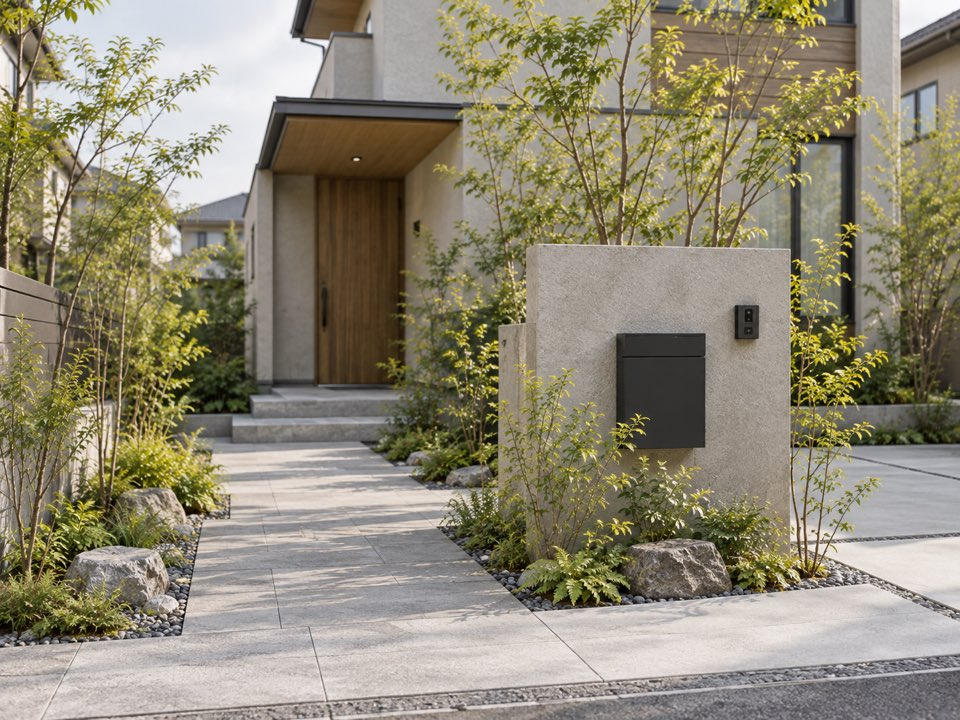
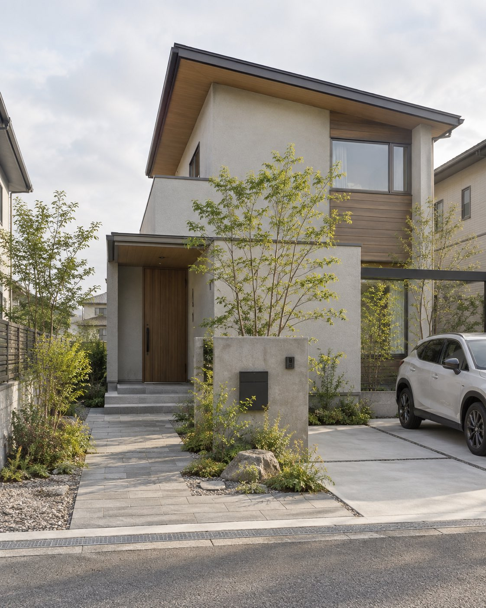
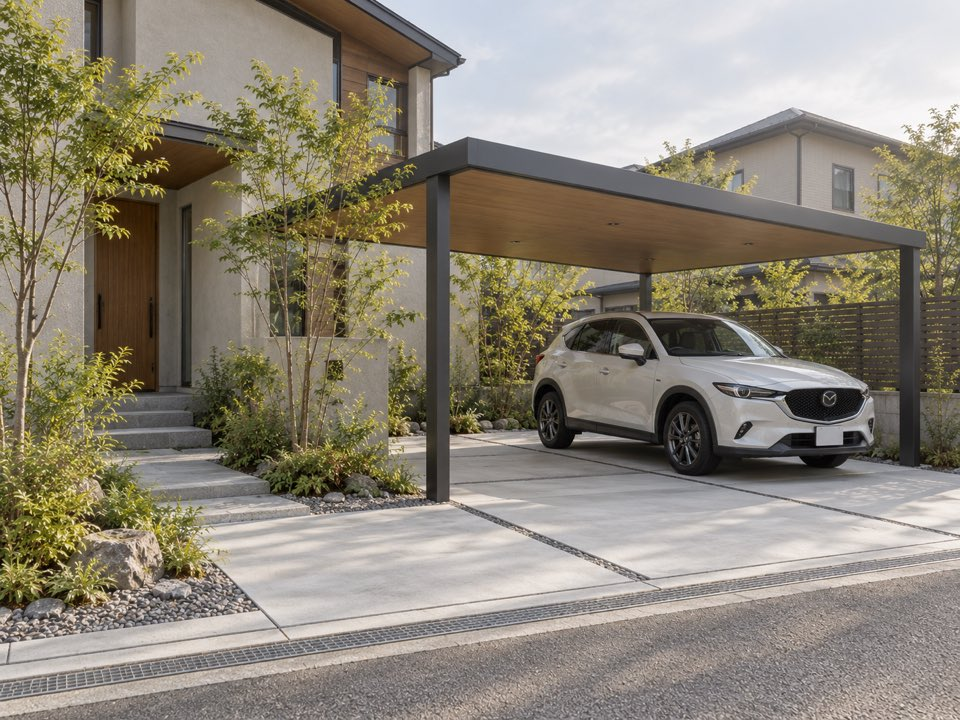
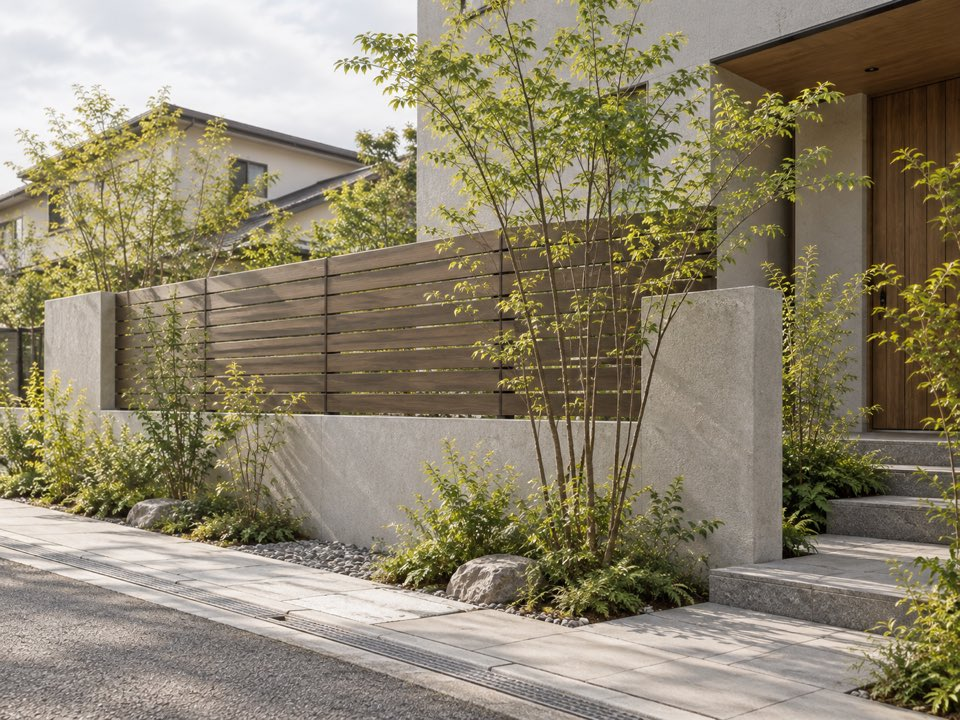
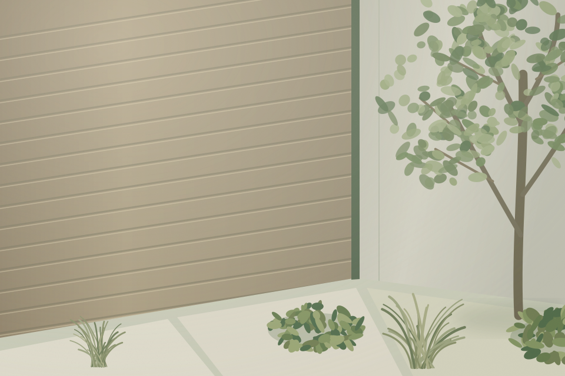

01 ENTRANCE
門まわり・アプローチ
玄関までの動線や、住まいの入口を考える外構。
住まいの入口を整える完成イメージをご覧いただくためのデモです。お問い合わせは受け付けていません。
EXTERIOR & LANDSCAPE
外構・エクステリア
住まいと外まわりが調和する、
心地よい景色へ。
対応エリアは、お打ち合わせ後に掲載します。
お問い合わせについてデモサイトのため、受付は行っていません。
外まわりにできること
01 / SERVICES
家へと続く道。車を停める場所。緑を楽しむ庭。
暮らしに身近な、外まわりの工事をご紹介します。

01 ENTRANCE
玄関までの動線や、住まいの入口を考える外構。
住まいの入口を整える
02 PARKING
車の出入りや駐車スペースの使い方を考える外構。
毎日の出入りを心地よく
03 GARDEN
視線や庭の使い方、植栽との調和を考える外構。
庭で過ごす時間を考える02 / YOUR IDEAS
こんなご相談を想定しています。
03 / OUR PERSPECTIVE
大切にすること

建物の色やかたちに、植栽や素材をどう合わせるか。住まい全体の景色から考える。
玄関までの歩きやすさ、車の出入り、庭の手入れ。見た目だけでなく、日々の動線にも目を向ける。
どんな暮らしにしたいか、何に困っているか。想いを整理することから、外まわりを考える。
04 / PROCESS
一つひとつの段階を、分かりやすく。
外まわりのご希望や
気になることを整理。
敷地の状況と、
暮らしのご要望を確認。
プランと工事内容、
費用を確認。
内容の確認を経て、
工事へ。
仕上がりを確認し、
お引渡しへ。
05 / SERVICE AREA
工事に伺える地域を、こちらに。
対応する市区町村と訪問条件を、
お打ち合わせ後に掲載します。
06 / COMPANY
株式会社前橋緑創
07 / FAQ
ご相談の前に、知っておきたいこと。
工事に伺える市区町村と、訪問の条件をここでご案内する予定です。
お引き受けできる工事や、ご相談の具体例をお打ち合わせ後に掲載します。
現地調査・お見積りの費用や条件を、実際の進め方に合わせてご案内する予定です。
ご相談からお引渡しまでの手順と、事前にご用意いただくものを整理して掲載します。
CONTACT
お庭や駐車場など、住まいの外まわりのこと。
ご相談内容に合わせて、お問い合わせ方法をお選びいただけます。
このサイトはデモです。フォームでの受付は行っていません。
LINEは会社のアカウントへ移動します。
INQUIRY FORM
こちらはデモ用のフォームです。現在はお問い合わせを受け付けていません。入力内容は送信・保存されませんので、実際の個人情報は入力しないでください。
相談項目の見本です。実際にお引き受けする工事は、お打ち合わせで決めます。
操作確認には example@example.com または 000-0000-0000 をお使いください。
個人情報の取り扱いについて（草案）本番公開前に、会社の運用に合わせて内容を整えます。